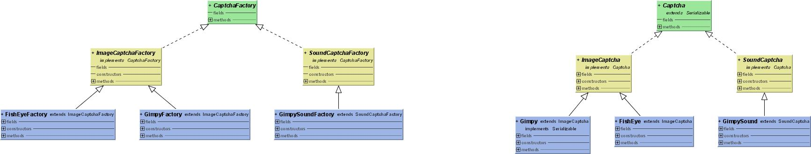

This is the base package for JCAPTCHAs.
It defines two main interfaces :
- Captcha : the container for challenge, built by a CaptchaFactory, which contains the challenge object (a pix or
a sound or whatever),
the string question, and has the ability to validate a string answer
- CaptchaFactory : the factory for Captchas :),which have the responsability to build captchas from their
constructor passing them builded questions and challenges.
Factories are built using the captcha components. (see the component sub package)
